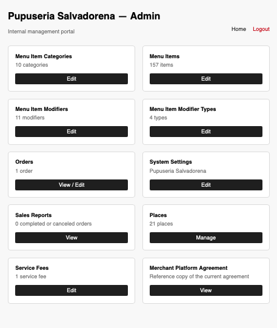
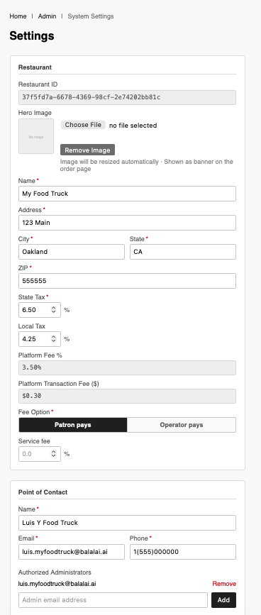
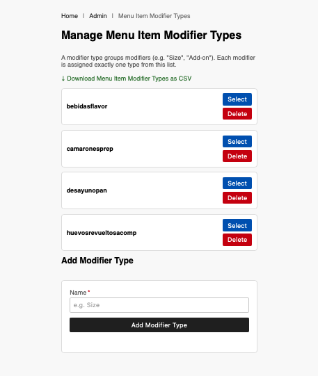
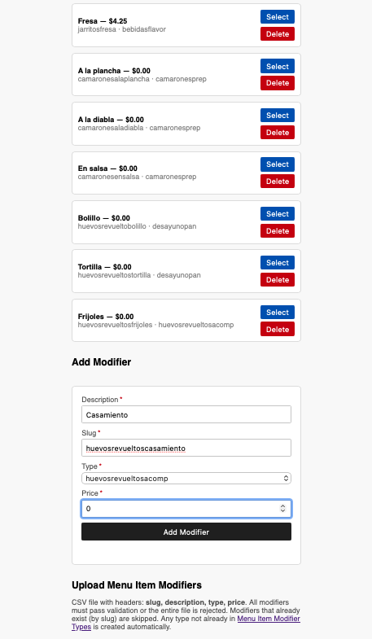
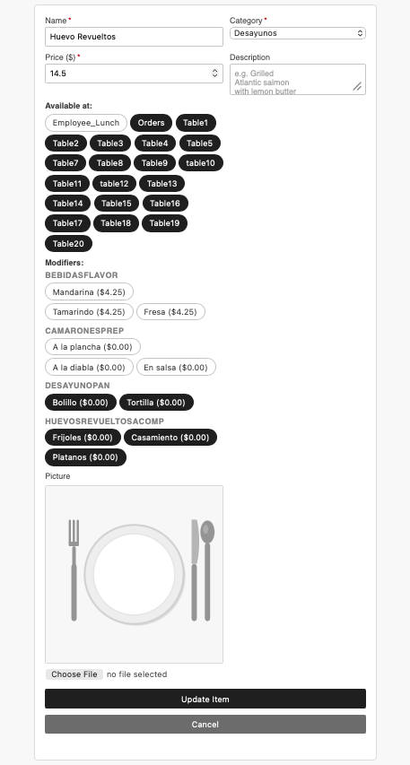
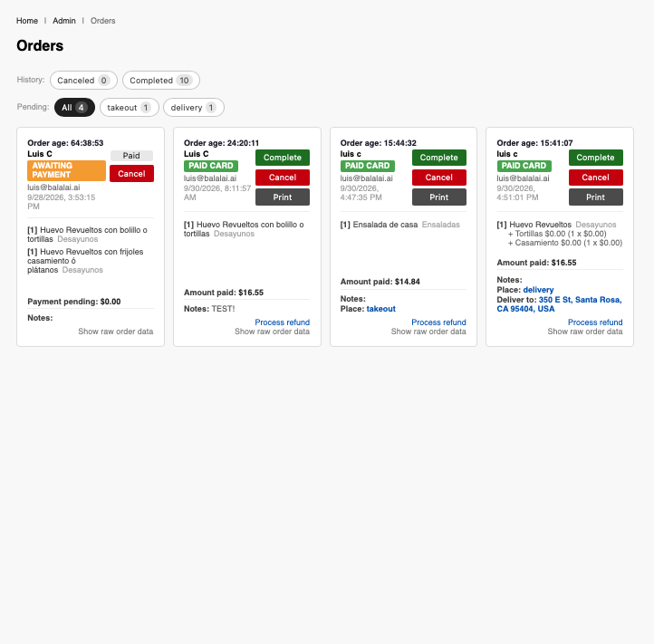
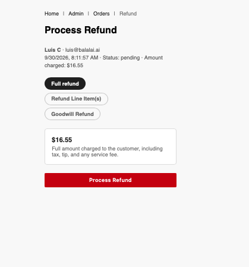
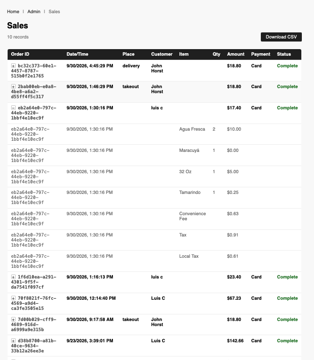
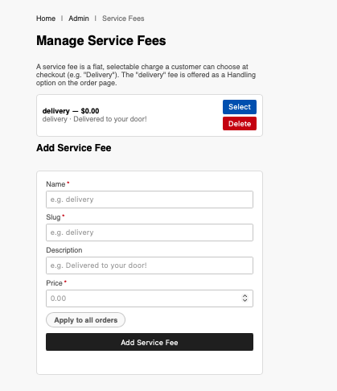
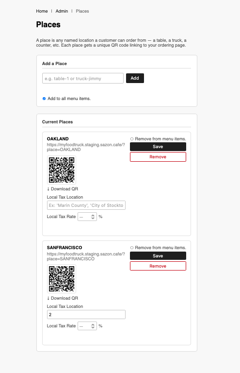

Agree to terms
View the Merchant Platform Agreement and agree to the Terms of Service.
Food operator guide
Review the agreement, set up your business and menu, configure modifiers, then manage orders, reports and service fees.
Orientation
The Admin Home now includes ten cards: Menu Item Categories, Menu Items, Menu Item Modifiers, Menu Item Modifier Types, Orders, System Settings, Sales Reports, Places, Service Fees and Merchant Platform Agreement.
Portal example

View the Merchant Platform Agreement and agree to the Terms of Service.
Add business details, branding, taxes, payment preferences, hours, delivery settings and contacts.
Create categories and items, then types and modifiers. Select modifiers on each item.
Configure Places, monitor Orders and refunds, review Sales Reports and set Service Fees.
Review and agree to the Terms of Service first. Then complete System Settings before building categories, menu items and modifiers.
First task
Before using the platform to operate your business, review the Merchant Platform Agreement and agree to the Terms of Service.
Setup step 2
After agreeing to the Terms of Service, enter your restaurant identity, branded banner image, address, taxes, payment preferences, operating hours, delivery choices, contact details, and authorized administrators.
Portal example

| Field | What to do | Why it matters |
|---|---|---|
| State Tax | Enter your applicable state sales-tax percentage. | It contributes to the order tax calculation. |
| Local Tax | Enter your applicable local tax percentage. | It adds the relevant local component to orders. |
| Fee Option | Choose Patron pays or Operator pays. | This determines who absorbs the platform fee. |
| Service fee | Enter a percentage only if you intend to charge a service fee. | It adds that percentage to applicable orders. |
Decide whether you accept cash payments. Enable cash only when your team can collect and reconcile cash orders reliably.
Enter your opening and closing hours. Orders are unavailable after closing, helping prevent orders from arriving when you are not operating.
Select whether you handle your own deliveries. Turn this on only when your business will fulfill delivery orders directly.
If you handle your own deliveries, create and manage the related delivery Service Fee in the Service Fees section.
Step 4
Modifier Types → Modifiers → Select on items
Portal example

slug, description, type, price.Portal example

Modifier Types → Modifiers → Select on items — Modifiers link automatically to menu items but must be selected in each item editor and saved with Update Item before patrons see them. A $14.50 item plus a $4.25 selection totals $18.75 before tax and fees.
Portal example

Step 5
Use Orders for full, line-item or verified custom refunds.
Portal example

Portal example

Step 6
Expand Sales Reports tickets for line items and refunds.
Portal example

Step 7
Set a fixed delivery charge; verify the mileage control in the deployed app.
Portal example

Setup step 4
Places still provide customer ordering locations and QR codes. Set up each applicable truck, counter, table or delivery location and test its QR link before service.
Portal example
